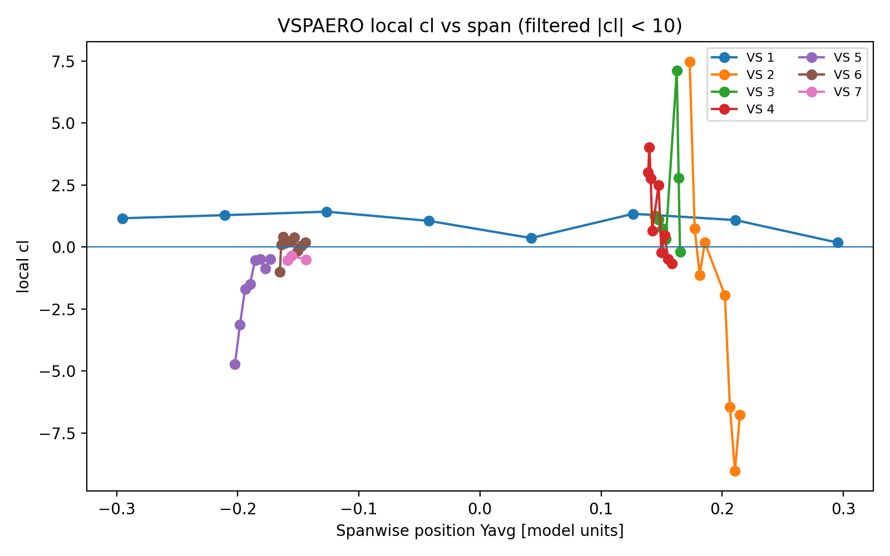

01 · Research
Investigating physical systems through computation and simulations.
Research projects involving fluid mechanics, numerical methods, physics-informed neural networks, model validation, CFD through LES and URANS, and scientific computing.
LES for Turbofan Jet Mixing and Contrails
Developing and validating OpenFOAM workflows for turbulent aircraft-exhaust mixing under contrail-relevant conditions. Work includes URANS and LES, coaxial core–bypass jets, temperature and water-vapour transport, supersaturation post-processing, mesh development, numerical-stability analysis, and parallel simulation on the Trillium HPC cluster.

Numerical Solvers vs Physics-Informed Neural Networks
Compared Euler, improved Euler, RK4, and a physics-informed neural network on the nonlinear Brusselator system. The study evaluated convergence, stability, runtime, training behaviour, and accuracy across 5,000 randomized parameter sets.